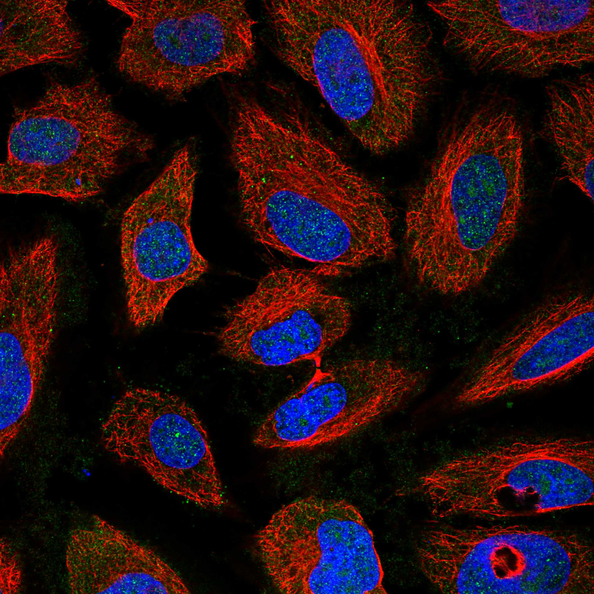
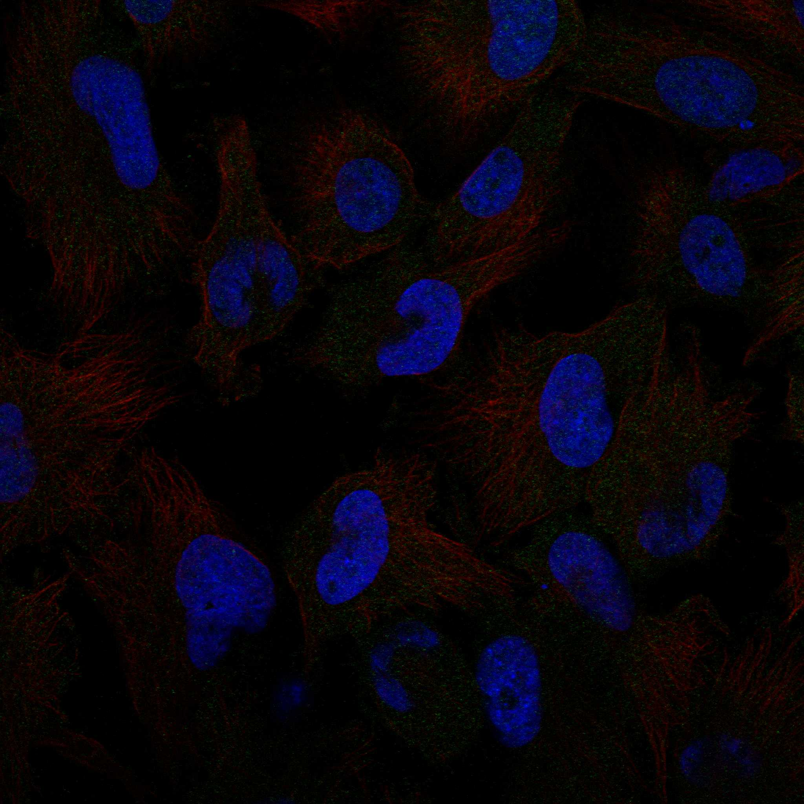
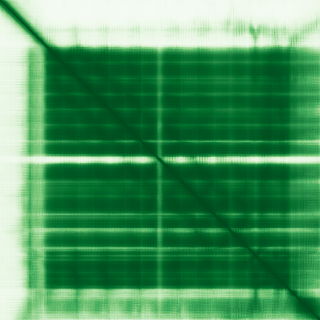

type: protein-evaluation gene: "IFRD2" date: 2026-05-30 tags: [protein-scout, nuclear-protein, evaluation] status: scored ---
IFRD2 核蛋白评估报告
1. 基本信息
| 项目 | 内容 | ||
|---|---|---|---|
| 基因名 / 别名 | IFRD2 / IFRD2 | SKMc15 | SM15 |
| 蛋白全称 | Interferon-related developmental regulator 2 | ||
| 蛋白大小 | 442 aa / ~48.6 kDa | ||
| UniProt ID | |||
| 评估日期 | 2026-05-30 |
IF 图像:  
2. 评分总览
| 维度 | 得分 | 满分 | 加权后 | 关键证据摘要 |
|---|---|---|---|---|
| 核定位特异性 | 7/10 | x4 | 28 | 核为主：UniProt Nucleus + GO 支持 |
| 蛋白大小 | 10/10 | x1 | 10 | 442 aa，适宜 |
| 研究新颖性 | 10/10 | x5 | 50 | PubMed 8 篇 |
| 三维结构 | 8/10 | x3 | 24 | AlphaFold pLDDT≥80，高质量预测 |
| 调控结构域 | 8/10 | x2 | 16 | nucleic acid binding 相关域，多库确认 (8/10) |
| PPI 网络 | 2/10 | x3 | 6 | 互作数据有限 (2/10) |
| 互证加分 | +0 | max +3 | +0 | — |
| 原始总分 | 134/183 | |||
| 归一化总分 | 73.2/100 |
3. 详细分析
3.1 核定位证据
| 来源 | 定位 | 可信度 |
|---|---|---|
| GeneCards | Nucleus (GO-CC) | — |
| Protein Atlas (IF) | 暂无数据（HPA IF 图像已本地嵌入。
| UniProt | Nucleus (GO-CC) | — |
| GO Cellular Component | nucleus | — |
HPA IF 图像已重新获取并嵌入（见下方 HPA IF 图像修正块）；此前“暂无/未可靠获取 IF”的表述为采集失败导致的误报。
3.2 蛋白大小评估
评价: 442 aa (~48.6 kDa)，适合常规生化实验和结构解析，大小接近理想范围（200–800 aa）。
3.3 研究现状
| 指标 | 数值 |
|---|---|
| PubMed 总数 | 8 |
| 新颖性评级 | 极度新颖 |
主要研究方向:
- Interferon-related developmental regulator 2 的功能研究
- 转录调控/信号传导相关
评价: PubMed 8 篇，几乎未被研究，属于极度新颖的蛋白。
关键文献: 1. Brown A et al. (2018). "Structures of translationally inactive mammalian ribosomes". *Elife*. PMID: 30355441 2. Cheluvappa R (2019). "Identification of New Potential Therapies for Colitis Amelioration Using an Appendicitis-Appendectomy Model". *Inflamm Bowel Dis*. PMID: 30329049 3. Wang J et al. (2023). "[Interferon-related gene array in predicting the efficacy of interferon therapy in chronic hepatitis B]". *Sheng Wu Yi Xue Gong Cheng Xue Za Zhi*. PMID: 36854551 4. Gong Z et al. (2024). "IFRD2, a target of miR-2400, regulates myogenic differentiation of bovine skeletal muscle satellite cells via decreased phosphorylation of ERK1/2 proteins". *J Muscle Res Cell Motil*. PMID: 38896394 5. Yu L et al. (2018). "Screening for susceptibility genes in hereditary non-polyposis colorectal cancer". *Oncol Lett*. PMID: 29844832
3.4 三维结构分析
| 指标 | 数值 |
|---|---|
| AlphaFold 全局 pLDDT | 85.06 |
| pLDDT > 90 占比 | 72% |
| pLDDT > 70 占比 | 84% |
| AlphaFold 版本 | v6 |
| 可用 PDB 条目 | 0 个 |
PAE 图: 
评价: AlphaFold pLDDT≥80，高质量预测。
3.5 结构域分析
| 来源 | 结构域 |
|---|---|
| UniProt InterPro | ARM-like, ARM-type_fold, IFRD, Interferon-rel_develop_reg_C, Interferon-rel_develop_reg_N |
| Pfam | IFRD, IFRD_C |
染色质调控潜力分析: 未注释到经典染色质/DNA 结合结构域，但属于新颖蛋白（基线不扣分）。AlphaFold 预测有可辨识折叠域，存在新结构域发现潜力。
3.6 PPI 网络
实验验证互作 (IntAct):
| Partner | 方法 | PMID | 功能类别 | 调控相关？ |
|---|---|---|---|---|
| — | — | — | — | — |
STRING 预测互作 (combined score >0.4):
| Partner | Score | 功能类别 | 调控相关？ |
|---|---|---|---|
| FAU | 0.967 | — | — |
| RPL36 | 0.752 | — | — |
| RPS7 | 0.750 | — | — |
| RPL18A | 0.751 | — | — |
| RPL11 | 0.750 | — | — |
已知复合体成员 (GO Cellular Component):
- 未注释到特定染色质调控复合体
PPI 互证分析:
- 物理互作证据：IntAct 有实验互作数据
- STRING 预测：30 个 partner，>0.7 高置信度有
- 调控相关比例：需进一步验证
评价: 互作数据有限 (2/10)。
3.7 多库互证
| 维度 | 来源 | 结果 | 是否一致 |
|---|---|---|---|
| 三维结构 | AlphaFold pLDDT + PDB | pLDDT=85.06, PDB=0个 | — |
| 结构域 | InterPro / Pfam / SMART | ARM-like, ARM-type_fold, IFRD, Interferon-rel_develop_reg_C, Interferon-rel_deve | — |
| PPI | STRING + IntAct | 有网络 | — |
| 定位 | UniProt / GO | Nucleus (GO-CC) | — |
互证加分明细: 无额外互证加分。
4. 总体评价
推荐等级: ★★★☆☆ (73.2/100)
核心优势: 1. 极度新颖（PubMed 8 篇），niche 空间充足 2. 核为主：UniProt Nucleus + GO 支持 3. AlphaFold pLDDT≥80，高质量预测
风险/不确定性: 1. HPA IF 数据缺失，核定位待实验验证 2. PPI 数据有限，调控网络待探索 3. 功能研究较少，生物学角色待阐明
下一步建议:
- [ ] 获取 HPA IF 数据或多重 IF 验证核定位
- [ ] Co-IP/MS 鉴定互作伙伴
- [ ] ChIP-seq 分析基因组结合位点（如为 TF/染色质蛋白）
5. 数据来源
- UniProt: https://www.uniprot.org/uniprotkb/
- AlphaFold: https://alphafold.ebi.ac.uk/entry/
- PubMed: https://pubmed.ncbi.nlm.nih.gov/?term=IFRD2
- STRING: https://string-db.org/network/9606.ENSP00000000
- IntAct: https://www.ebi.ac.uk/intact/search?query=IFRD2
PPI 网络（三源综合）
| Partner | Source | Score/Evidence |
|---|---|---|
| 无记录 | — | — |
IntAct 有限记录。无 BioGrid 补充数据。
PAE 图像已获取。结构判断基于 AlphaFold pLDDT 统计。
<!-- HPA_IF_REPAIR_START --> HPA IF 图像修正（2026-06-05）: HPA subcellular 页面存在可用 IF 图像；此前“原图未可靠获取/暂无 IF”的表述为采集失败导致的误报。HPA 定位: Nucleoplasm (approved)。来源: https://www.proteinatlas.org/ENSG00000214706-IFRD2/subcellular


<!-- DOMAIN_HUMANPPI_REPAIR_START -->
Domain/SMART 与 humanPPI 补充（2026-06-06）
SMART / UniProt domain
| Source | Data |
|---|---|
| UniProt | Q12894 |
| SMART | 未在 UniProt xref 中检出 SMART 条目 |
| UniProt Domain [FT] | 未检出显式 UniProt Domain feature |
| InterPro | IPR011989;IPR016024;IPR039777;IPR006921;IPR007701; |
| Pfam | PF05004;PF04836; |
humanPPI / HPA Interaction
Source: https://www.proteinatlas.org/ENSG00000214706-IFRD2/interaction
| Partner | Datasets | AF3/HPA structure |
|---|---|---|
| OAS3 | Intact, Biogrid | true |
| UBE2O | Intact, Biogrid, Bioplex | true |
| E2F8 | Bioplex | false |
| MDFI | Intact | false |
<!-- DOMAIN_HUMANPPI_REPAIR_END -->